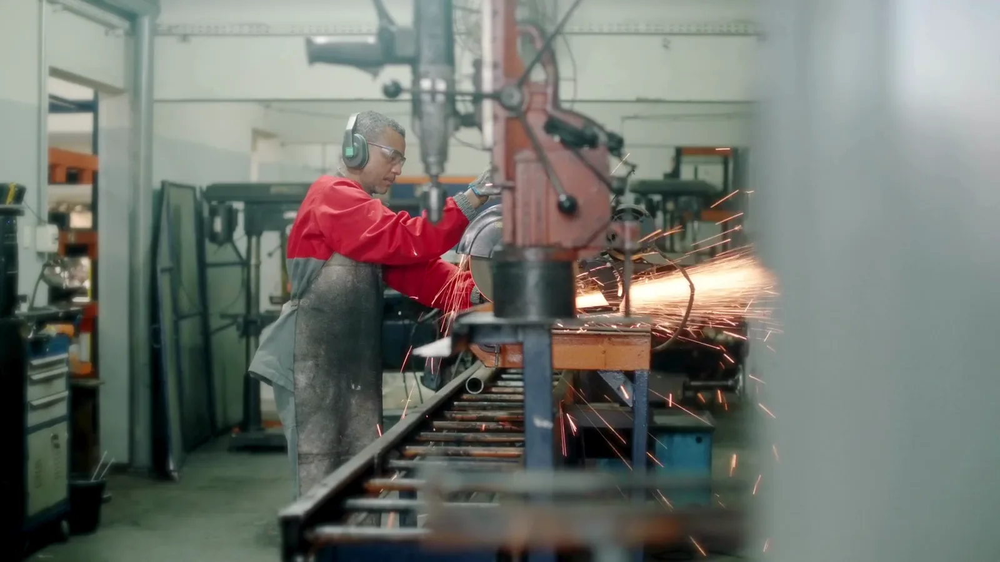

Origem industrial
Início de uma trajetória de desenvolvimento e fabricação em Belo Horizonte.
Desde 1999, a MTower desenvolve soluções móveis, autônomas e sustentáveis para tornar operações mais seguras, eficientes e preparadas.
A experiência com metal, fabricação e campo evoluiu para uma plataforma de soluções que conecta energia, iluminação, monitoramento, conectividade e estruturas móveis.

Por trás de cada solução existe uma equipe que entende que segurança, eficiência e sustentabilidade precisam caminhar juntas.
Início de uma trajetória de desenvolvimento e fabricação em Belo Horizonte.
Conhecimento industrial aplicado a equipamentos e necessidades de setores exigentes.
Energia solar, iluminação e estruturas capazes de acompanhar a operação.
Ecossistemas integrados para energia, segurança, dados e apoio em campo.
Valores expressos na forma de projetar, fabricar, implantar e apoiar cada solução.
Desenvolver equipamentos eficientes e sustentáveis que apoiem pessoas e operações.
Buscar excelência técnica, operacional e comercial em cada relacionamento.
Construir resultados com honestidade, disciplina e responsabilidade com pessoas e sociedade.
A proximidade entre quem projeta, quem fabrica e quem conhece o uso em campo reduz ruído e acelera a resposta técnica.
Soluções desenhadas com visão de aplicação, segurança, ergonomia e confiabilidade.
Capacidade industrial para transformar desenho técnico em equipamento robusto.
Atendimento técnico para orientar uso, manutenção e continuidade dos sistemas.

O projeto começa ouvindo quem vive a operação. A fabricação transforma essa leitura em estrutura, sistema e desempenho.
Conhecer soluções